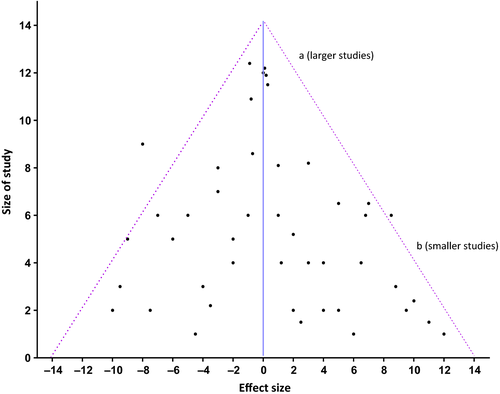

Funnel plot
Introduction

This is called a funnel plot which is a simple scatter plot of the treatment effects (RR or OR) estimated from individual studies (horizontal axis) against the precision of the studies represented by standard error (SE).
The vertical dotted line shows the estimated combined RR or OR from the meta-analysis. The diagonal dotted lines show the range in which studies should be ideally distributed given the size (and thus precision) of each study. Thus larger (big sample size), more precise (smaller standard error) studies should be closely distributed either side of the pooled effect and smaller studies should be distributed more widely giving the classic inverted symmetrical funnel. If the studies are not distributed randomly (due to sampling error) around the combined RR estimate then some other influence is suggested.

Now what is this?
This funnel plot shows trials scattered asymmetrically around the pooled RR with smaller trials reporting a greater effect than larger ones.
Two possible explanations are: smaller trials of lower methodological quality tend to overestimate true effect; publication bias has led to the smaller negative trials remaining unpublished.

If so, what is this?
The funnel plot displays the % of observed 30-day mortality rate of operations on the Y-axis and the total number of operations on the X-axis. A practice lying on the line Y=1 has a surgeon performing close to average, whereas a practice lying above Y=1 has a the total number of operations that is higher than the average.
Important point
Funnel plot is used to detect publication bias as well as outliers
Funnel plot
Funnel plot concepts
It is a representation of SEM plotted against the true population mean or the no effect line of a study in a graph. Smaller studies tend to have larger SEM and the larger studies will have smaller SEM. Hence the plot assumes a funnel shape. I an ideal world, funnel plot is supposed to form a symmetrical “funnel”. This is not the case in real world, because of various reasons.
Uses of funnel plot
To identify outliers. Eg: A surgical resident’s performance
To identify the validity of a meta-analysis. An asymmetrical funnel plot suggests a potential problem with the results of the meta-analysis.
Causes of asymmetrical funnel plot
Reporting bias
Reporting bias
- Publication bias: Delayed reporting, language bias, duplication)
- Selective outcome reporting
- Selective analysis reporting
Poor methodology
Design
Analysis
Fraud
Heterogeneity
Chance
Heterogeneity
Variations over and above that is expected by chance
predicts whether the data from different studies can be combined for meta-analysis to obtain a forest plot.
Causes
| Clinical | Statistical |
|---|---|
| Difference in the population | Individual results are inconsistent |
| Difference in the study design | Difference in size of benefit |
| Difference in intervention | Difference in size of harm |
| Difference in outcome | |
| Always present | |
| Cannot be statistically evaluated | Can be evaluated statistically |
Detecting Heterogeneity
Review the table describing individual studies
“eye ball test”, review the forest plot
Review the statistical tests
Statistical tests
Statistical tests for detecting heterogeneity
Tests for its presence:
Chi Square test, p>0.1 means study is homogenous
Test to quantify:
I2
It measures the % of heterogeneity
≤25%=low
50%= moderate
≥75%= high)
Analysis of cause of heterogeneity
Once heterogeneity is identified and quantified, he have to analyse and find out why it is present
This is done by
subgroup analysis
Meta regression